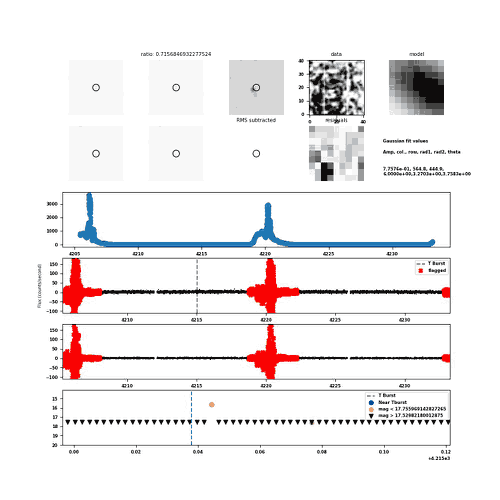

The image and light-curve panels are unchanged from the image-subtraction candidate plot. Red crosses mark cadences rejected by the existing running-RMS checks, the dashed line marks the trigger time, and the magnitude panel highlights the existing near-trigger and sensitivity selections.

Candidate
lc_GRB260623A_cand24076
Event
GRB260623A
Detector
Sector 105 Cam 4 CCD 2
Status
PASS
Detection class
multiple
Detection count
2
RMS
19.2445
Unflagged negative flux points
2699
Trigger time
2026-06-23 12:54:34.874
RA (deg)
39.2558
Dec (deg)
-41.592
Column
565.077
Row
442.964
Galactic longitude (deg)
253.566
Galactic latitude (deg)
-64.0151
Data file
./cam4_ccd2//lcGRB/lc_GRB260623A_cand24076
Panels
The image and light-curve panels are unchanged from the image-subtraction candidate plot. Red crosses mark cadences rejected by the existing running-RMS checks, the dashed line marks the trigger time, and the magnitude panel highlights the existing near-trigger and sensitivity selections.